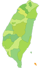

阿美族的住屋分佈從花蓮到臺東與屏東皆有，建築有南北上的差異；阿美族為母系社會，公眾事務仍由男性參與。住宅除了主屋外，也有公廨、祖祠、廚房、穀倉、水車、樁米房、家畜寮舍或墓園。一般認為阿美族是漢化較深的一族。
阿美族的住屋有單室前門室與複室側門式，所謂單室即是長方形平面不隔間，中央有火塘，四周為睡覺之所；而複室則為室內有木板隔間，較為隱私。
泰雅族分佈最廣，包括臺北、宜蘭、桃園、新竹、苗栗、臺中、南投與花蓮各地山區內。雖各地建築亦不同，但大都包括主屋、穀倉、家畜與家禽舍、獸骨架、頭骨架與望樓。
住屋平面多呈長方形，室內有平地式或平地穴式，採半地穴式能獲禦寒取暖的功能。
望樓設村莊的入口，原本有守望監視之功能，後來轉變成為眺望風景之用。平臺覆以草頂，牆上闢窗，室內中央舖石板可生火取暖。
排灣族建築最富藝術氣氛，多分佈在南部的山區，包括屏東及臺東一帶。排灣族與魯凱族和卑南族在文化上互相交流，因此有共通之處；排灣族重視社會階段，實施封建制度。排灣族中有世襲的宗主頭目，也有因戰功而形成的軍事頭目，也有專司祭典的頭目，也有長老。土地為少數地主所有，耕種的人要繳交租稅給地主，這種情形頗像中國或歐洲古代的領土宗主權社會。
排灣族的建築以豐富的木雕彰顯屋主的貴族身分，今日的好茶與古樓為保存完整的聚落。室內有木雕祖先像，門楣上雕有許多百步蛇的紋樣；頭目家屋前的庭院有象徵頭目威權的司令臺及目標石，上面雕著人形與百步蛇，是其他族沒有的。

布農族分佈南投、高雄與臺東三縣交界山區，是原住民住得最高的一族，是父系社會。建築材料多用片岩、木板及茅草，就地取材且因地制宜。
布農族喜歡半地穴，室內略比室外低，室內有一穀倉，貯藏小米。住屋外面常以石片圍成矮牆與附屬小屋，構成一個院落的生活空間，表示他們的生活領域超出室內範圍，周圍環境是他們生活起居作息空間的延長。

卑南族分佈臺東，他們漢化較深，逐漸喪失自己傳統古文化。
他們的住屋平面為長方形，用竹管編成牆體，以茅草蓋屋頂，地面不凹下，很接近臺灣南部的平埔族建築。卑南族採室內葬，即是在住屋挖掘墓穴，將死者的屍身葬於穴內。另外，有一種放棄舊屋的習俗，若死者為凶死，不是善終，那麼家人要另建新屋。
卑南族的兒童到一定年齡要到少年會所受訓練，目的在訓練生活禮節、體能知識與戰鬥技術。少年會所用木柱支撐高架式，上面平臺為圓形，屋頂蓋茅草頂，讓受訓的中青年人被孤立起來，集中教導，是種很成功的學校建築。
魯凱族分佈於高雄、屏東與臺東交界山區，文化特性接近排灣。其住屋多用片岩砌成，牆壁與屋頂皆以片岩排成。室內地板也都舖成大片石板，四周用木板墊成床舖，中央設有火爐；室內的木柱呈扁平狀，主柱視為神聖的，有守護神的象徵。室外通常有庭院，舖大片石板，邊緣凸出石臺作為椅子，屋簷下有石椅供作家事，設計顯示出室內室外空間的充分利用。

鄒族分佈嘉義阿里山一帶，為父系社會。住宅平面有長方形及橢圓形，茅草屋頂；在阿里山達邦社尚有完整的大型集會所，屬於干欄式構造，平時不可隨便上去，可能冒瀆神明。

賽夏族分佈新竹與苗栗之山區，人口為九族中最少者。建築物與泰雅族人相近，且深受漢人影響，房屋內有明顯隔間，各有獨立機能，反映出家庭私密性要求高，外觀上很像漢人的房屋。

達悟族居住在蘭嶼以打漁維生，由於未受其他族群影響，所以保存完整濃厚古老傳統文化。達悟族為父系社會，社會分工有序。為了防颱風，建屋在凹坑中，地底有排水道，室內形成前後室，主屋建在凹坑下。
涼臺為達悟族人最重要的休閒空間，平日閒話家常及聯絡感情皆在涼臺上；他們注重家庭成員的感情，因此在主屋前的平地上有大石頭併成的靠背石，供坐躺及話家常之用。

平埔族的建築不容易見到，很少能保存下來。早在明清的文獻提及，北部有凱達格蘭族，宜蘭有噶瑪蘭族，臺中有巴布薩拉族及和安雅族，嘉南平原有西拉雅族，高雄有馬卡道族（平埔族分布圖）。據荷蘭人記載他們的建築多以長方形平面，多用竹子、木材及茅草為主要建材。
平埔族漢化很深，根據清代文獻描述，平埔族建築有高土臺基，其屋頂、門窗、牆體及屋架，則可能以編竹或編藤製作。